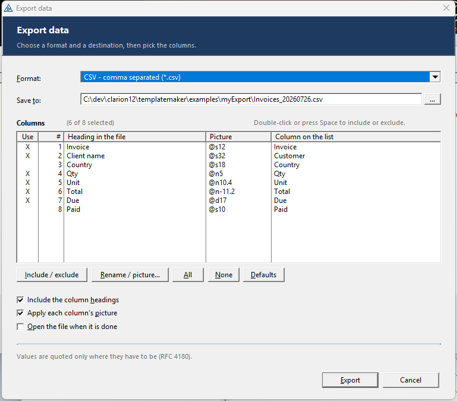
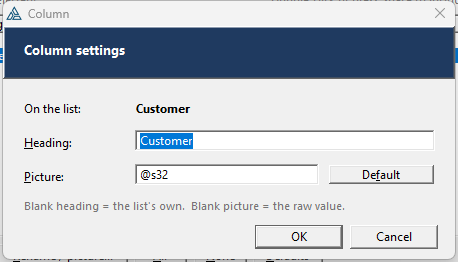

myExport
Put an Export button on any browse or list. One press asks for the format, the file name and which columns to send, then writes CSV, CSV UTF-8, TSV, XML, JSON, HTML or a real Excel .xlsx workbook — in pure Clarion, with nothing to deploy.
Pon un botón Exportar en cualquier browse o lista. Una pulsación pide el formato, el nombre del archivo y qué columnas enviar, y escribe CSV, CSV UTF-8, TSV, XML, JSON, HTML o un libro de Excel .xlsx de verdad — en Clarion puro, sin nada que instalar.
7 formats · real OOXML .xlsx · pick / rename / re-picture columns · no Excel, no COM, no helper .exe 7 formatos · .xlsx OOXML real · elegir / renombrar / re-picture de columnas · sin Excel, sin COM, sin programa auxiliarOverviewResumen #
Drag myExport - Export button onto a browse window. That is the whole job: you get a wired-up button, a modal dialog that asks for a format, a destination and which columns to send, and seven writers behind it.
The part that makes it worth having is that you never describe your columns to it. At the
moment the button is pressed it reads the LIST control's own FORMAT — which columns
exist, which queue field each one shows, its heading and its picture — and pulls the values out of
the queue with WHAT(). The file therefore matches the screen exactly, including
columns your user re-ordered, resized or hid after the window opened.

| myExport | |
|---|---|
| Needs Excel installed | No — the .xlsx is assembled byte by byte in Clarion |
| Needs a DLL / OCX / COM / helper .exe | No — nothing to redistribute |
| Column setup | None — read from the live LIST every time |
| Column control | The user ticks, renames and re-pictures columns in the dialog |
| Formats | CSV, CSV UTF-8, TSV, XML, JSON, HTML, Excel .xlsx |
| Records | Every record in the browse (walks the view), or just the loaded page |
| Where it goes | The user picks, in a standard Save-As dialog |
.xlsx is a ZIP archive of XML parts. ExportClass writes both — the XML
parts and the ZIP container (local headers, CRC-32, central directory, EOCD) — so a real workbook
comes out with no outside program in the loop. It opens in Excel, LibreOffice, Google Sheets,
Numbers, pandas and openpyxl.Arrastra myExport - Export button sobre la ventana de un browse. Eso es todo: obtienes un botón ya cableado, un diálogo modal que pide el formato, el destino y qué columnas enviar, y siete escritores detrás.
Lo que de verdad lo hace útil es que nunca le describes tus columnas. En el momento en que
se pulsa el botón lee el FORMAT del propio control LIST — qué columnas hay, qué campo
de la cola muestra cada una, su encabezado y su picture — y saca los valores de la cola con
WHAT(). Por eso el archivo coincide exactamente con la pantalla, incluidas las columnas
que el usuario reordenó, redimensionó u ocultó después de abrir la ventana.
| myExport | |
|---|---|
| ¿Necesita Excel instalado? | No — el .xlsx se arma byte a byte en Clarion |
| ¿Necesita DLL / OCX / COM / programa auxiliar? | No — no hay nada que redistribuir |
| Configuración de columnas | Ninguna — se leen del LIST vivo cada vez |
| Control de columnas | El usuario marca, renombra y cambia el picture en el diálogo |
| Formatos | CSV, CSV UTF-8, TSV, XML, JSON, HTML, Excel .xlsx |
| Registros | Todos los del browse (recorre la vista), o solo la página cargada |
| Destino | Lo elige el usuario, en un diálogo Guardar como estándar |
.xlsx es un archivo ZIP con partes XML dentro. ExportClass escribe las
dos cosas — las partes XML y el contenedor ZIP (cabeceras locales, CRC-32, directorio central,
EOCD) — así que sale un libro de verdad sin ningún programa externo de por medio. Se abre en Excel,
LibreOffice, Google Sheets, Numbers, pandas y openpyxl.Install & registerInstalar y registrar #
- Copy
templates/myExport/ExportClass.incandExportClass.clwto a folder on the Clarion redirection path (your app folder, or\clarion12\libsrc\win). They must be stored in ANSI with CRLF line endings — an LF-only copy makes the compiler report a bogusIllegal data type: EXPORTCLASSat every use site. - Copy
templates/myExport/myExport.tplinto your template folder. - In the IDE: Setup ▸ Template Registry ▸ Register, pick
myExport.tpl. - Open a browse procedure's window, and from the control-template list drag myExport - Export button for a browse/list onto the window.
- In its prompts, set List control to export to your browse's LIST, and (for the default
"every record" mode) the Browse object name —
BRW1for the first BrowseBox on the procedure.
LINK attribute pulls ExportClass.clw into the build, and the
control template emits its own INCLUDE('ExportClass.INC'),ONCE. In a single-EXE
application the global extension myExport - Global is optional — add it only if you
also want to call the class from hand-written code in procedures that have no Export button. In a
multi-DLL application it is required, in every app: see
Multi-DLL applications.ExportClass.inc the engine (config + method prototypes)
ExportClass.clw the implementation: dialog, 7 writers, ZIP, UTF-8
ExportClass.exp export list — only for a hand-coded multi-DLL build
myExport.tpl global extension + control template + code template
myExport.zip the four files above, for distribution
examples/myExport/
ExportDemo.clw / .cwproj a runnable demo — a list and one Export button
- Copia
templates/myExport/ExportClass.incyExportClass.clwa una carpeta del camino de redirección de Clarion (la carpeta de tu app, o\clarion12\libsrc\win). Deben guardarse en ANSI y con finales de línea CRLF: una copia con solo LF hace que el compilador reporte un falsoIllegal data type: EXPORTCLASSen cada uso. - Copia
templates/myExport/myExport.tpla tu carpeta de plantillas. - En el IDE: Setup ▸ Template Registry ▸ Register, y elige
myExport.tpl. - Abre la ventana de un procedimiento browse y arrastra desde la lista de plantillas de control myExport - Export button for a browse/list a la ventana.
- En sus prompts, pon List control to export apuntando al LIST del browse y, para el modo
por defecto ("todos los registros"), el nombre del Browse object —
BRW1para el primer BrowseBox del procedimiento.
LINK de la clase mete ExportClass.clw en la compilación, y la
plantilla de control emite su propio INCLUDE('ExportClass.INC'),ONCE. En una aplicación
de un solo EXE la extensión global myExport - Global es opcional: agrégala solo si
además quieres llamar a la clase desde código escrito a mano en procedimientos que no tienen botón.
En una aplicación multi-DLL es obligatoria, en todas las apps: ver
Aplicaciones multi-DLL.ExportClass.inc el motor (configuración + prototipos)
ExportClass.clw la implementación: diálogo, 7 escritores, ZIP, UTF-8
ExportClass.exp lista de exportación — solo para multi-DLL escrito a mano
myExport.tpl extensión global + plantilla de control + code template
myExport.zip los cuatro archivos anteriores, para distribuir
examples/myExport/
ExportDemo.clw / .cwproj demo que compila y corre — una lista y un botón Exportar
Already have a button or menu item?¿Ya tienes un botón o una opción de menú? #
myExportHere is a #CODE template with the same prompts. Drop it into the
Accepted embed of any existing button, menu item, toolbar entry or hot key and it emits
the same block right there, declaring its own object in the procedure's data.
Use it when the export belongs on your existing File ▸ Export… menu rather than on a new button, or when the browse window's layout is already full.
myExportHere es una plantilla #CODE con los mismos prompts. Suéltala en el
embed Accepted de cualquier botón, opción de menú, entrada de toolbar o tecla rápida
que ya tengas y emite el mismo bloque justo ahí, declarando su propio objeto en los datos del
procedimiento.
Úsala cuando la exportación pertenezca a tu menú Archivo ▸ Exportar… en vez de a un botón nuevo, o cuando la ventana del browse ya esté llena.
The run-time dialogEl diálogo en ejecución #
A modal window, centred, with a slate header band. It asks for exactly two things and offers three options:
- Format — a drop list holding only the formats you ticked. Changing it retargets the file
extension automatically, so
Invoices.csvbecomesInvoices.xlsx. - File name — pre-filled with
<Title>_yyyymmdd<ext>in the current folder. … opens the standard Windows Save-As browser (with its own overwrite warning). - Include the column headings, Apply each column's picture and Open the file when it is done — the template's settings, still changeable per export.
Below that is the column picker, then the three options and the format's own one-line note.
The object survives for the life of the window, so the second export remembers the first one's folder, name, format and column choices.
Una ventana modal, centrada, con una banda superior en azul pizarra. Pide exactamente dos cosas y ofrece tres opciones:
- Formato — una lista desplegable que contiene solo los formatos que marcaste. Al cambiarlo
se ajusta sola la extensión del archivo, así que
Facturas.csvpasa a serFacturas.xlsx. - Nombre de archivo — se propone
<Title>_aaaammdd<ext>en la carpeta actual. El botón … abre el diálogo Guardar como de Windows (con su propio aviso de sobrescritura). - Incluir los encabezados, Aplicar el picture de cada columna y Abrir el archivo al terminar — los valores de la plantilla, todavía modificables en cada exportación.
Debajo está el selector de columnas, luego las tres opciones y la nota de una línea propia del formato.
El objeto vive mientras viva la ventana, así que la segunda exportación recuerda la carpeta, el nombre, el formato y la elección de columnas de la primera.
Choosing the columnsElegir las columnas #
Every data column on the list is shown with a tick box. The user can leave a column out, rename it for the file, or give it a different picture — and the last column always shows what the list itself calls it, so nothing gets lost.
| Column in the dialog | What it shows |
|---|---|
| Use | X when the column will be written. Double-click a row or press Space to flip it; Include / exclude does the same. |
| # | Its position on the list, so a renamed column is still findable. |
| Heading in the file | What the file will call it — the CSV/TSV heading, the XML element, the JSON key, the Excel and HTML header. |
| Picture | The Clarion picture used to format the value. |
| Column on the list | The heading the LIST itself carries — unchanged, as a reference point. |
Rename / picture…
Opens a small modal on the highlighted column:

- Heading — what the column is called in the file. Leave it blank to put the list's own heading back.
- Picture — any Clarion picture. Leave it blank to write the raw value: handy
for JSON and Excel, where an unformatted number is more useful than a formatted string. It is
checked for a leading
@before the popup will close. - Default — puts both back to what the list uses.
All, None and Defaults act on the whole list; Defaults also undoes every rename and picture override. Pressing Export with nothing ticked is refused with a popup rather than writing an empty file.
Customer to Client name gives you <Client_name> and
"Client name". Changing a picture re-decides whether the column is numeric, so clearing
an @N picture turns a formatted Excel string back into a real number — and putting a
@D picture on a date column turns it into text on purpose.The choices stick
The generated code calls Init() before every export, and Init() re-reads
the list — so column edits would normally be wiped between exports. They are not: the scan
fingerprints the list's layout (column count, field numbers, widths) and only rebuilds when
that fingerprint actually changes. Export, tweak, export again — the tick marks and renames are
still there. If the layout genuinely changes the list is rebuilt from scratch, which is what you
want. Rescan() forces it.
Turning it off
Untick Let the user choose, rename and re-picture the columns in the template prompts (or
set AllowColumns = 0). The picker is hidden and the dialog shrinks back to just format
and file name — the columns then go out exactly as the list shows them.
Todas las columnas de datos de la lista se muestran con una casilla. El usuario puede dejar fuera una columna, renombrarla para el archivo o darle un picture distinto — y la última columna siempre muestra cómo la llama la lista, así no se pierde nada.
| Columna del diálogo | Qué muestra |
|---|---|
| Use | X cuando la columna se va a escribir. Doble clic en la fila o Espacio para cambiarlo; el botón Include / exclude hace lo mismo. |
| # | Su posición en la lista, para reconocer una columna aunque la hayas renombrado. |
| Heading in the file | Cómo la llamará el archivo: el encabezado CSV/TSV, el elemento XML, la clave JSON y el título en Excel y HTML. |
| Picture | El picture de Clarion con el que se formatea el valor. |
| Column on the list | El encabezado que lleva el LIST — sin cambios, como referencia. |
Rename / picture…
Abre una ventana modal pequeña sobre la columna resaltada:
- Heading — cómo se llama la columna en el archivo. Déjalo en blanco para recuperar el encabezado de la lista.
- Picture — cualquier picture de Clarion. Déjalo en blanco para escribir el valor
crudo: muy útil en JSON y Excel, donde un número sin formatear vale más que una cadena
formateada. Se comprueba que empiece por
@antes de cerrar la ventana. - Default — devuelve ambos a lo que usa la lista.
All, None y Defaults actúan sobre toda la lista; Defaults además deshace cada renombrado y cada cambio de picture. Pulsar Export sin nada marcado se rechaza con un aviso en vez de escribir un archivo vacío.
Customer a Client name te da <Client_name> y
"Client name". Cambiar el picture vuelve a decidir si la columna es numérica: quitar un
picture @N convierte una cadena de Excel otra vez en número real, y poner un
@D en una columna de fecha la convierte en texto a propósito.Las elecciones se mantienen
El código generado llama a Init() antes de cada exportación, e Init()
relee la lista — así que los cambios de columna se perderían entre exportaciones. No se pierden: el
escaneo toma una huella de la disposición de la lista (número de columnas, números de campo,
anchos) y solo reconstruye cuando esa huella cambia de verdad. Exporta, ajusta, vuelve a exportar:
las marcas y los renombrados siguen ahí. Si la disposición cambia realmente, la lista se reconstruye
desde cero, que es lo que quieres. Rescan() lo fuerza.
Cómo desactivarlo
Desmarca Let the user choose, rename and re-picture the columns en los prompts de la
plantilla (o pon AllowColumns = 0). El selector se oculta y el diálogo se encoge hasta
dejar solo el formato y el nombre de archivo — las columnas salen entonces exactamente como las
muestra la lista.
Remembering the last exportRecordar la última exportación #
Tick Remember the user's choices between runs and the export dialog comes back exactly as they left it — same format, same folder, same tick boxes, same columns — not just for the life of the window, but the next time the program runs.
When an export succeeds the settings are written to an INI section; when the dialog next opens they are read back. What is stored:
- the format and the folder (the file name itself is re-suggested with today's date,
so you get
Invoices_20260726.xlsxrather than yesterday's name); - Include the column headings, Apply each column's picture and Open the file when it is done;
- the whole column list — which are ticked, every rename, every picture override.
Where it is stored
By default, in <your program>.INI beside the executable, under a section named
after the profile:
[myExport_BrowseInvoices]
Fmt=5
Headers=0
Folder=C:\reports
Sig=5x19591
C2.Head=Client name ! only what the user actually changed
C3.Use=0
C4.Pic==@n12.4
The Profile prompt names the section and defaults to the procedure name, so two browses in the same application never overwrite each other's settings. Point INI file somewhere else if you keep your settings in a specific file.
When the browse changes
Sig is a short fingerprint of the list's layout (column count, field numbers, widths).
If you add, remove or resize a column the fingerprint no longer matches and the saved column
settings are ignored — so a rename never lands on the wrong column. The format, folder and tick boxes
still come back.From code
| Member | Meaning |
|---|---|
Persist | BYTE — 1 = save on success and restore when the dialog opens. |
Profile | Which saved profile to use; blank derives one from Title. |
IniFile | Where to store it; blank = <the exe>.INI. |
LoadSettings() | Restore now — Ask() calls it for you the first time. |
SaveSettings() | Save now — a successful EndFile() calls it for you. |
ForgetSettings() | Wipe this profile, so the next export starts from the template's defaults. |
The pair is also useful without the dialog — restore a saved profile, then export unattended:
Exporter1.Persist = 1 Exporter1.Profile = 'BrowseInvoices' Exporter1.LoadSettings() ! same columns and format as last time Exporter1.FileName = 'C:\nightly\invoices.xlsx' Exporter1.Confirm = 0 Exporter1.ExportQueue()
Marca Remember the user's choices between runs y el diálogo de exportación vuelve a aparecer tal como lo dejaron — mismo formato, misma carpeta, mismas casillas, mismas columnas — y no solo mientras la ventana sigue abierta, sino la próxima vez que se ejecute el programa.
Cuando una exportación termina bien, los ajustes se escriben en una sección de un INI; al abrir el diálogo la próxima vez, se vuelven a leer. Lo que se guarda:
- el formato y la carpeta (el nombre del archivo se vuelve a proponer con la fecha de
hoy, así que obtienes
Invoices_20260726.xlsxy no el nombre de ayer); - Incluir los encabezados, Aplicar el picture de cada columna y Abrir el archivo al terminar;
- la lista de columnas entera — cuáles están marcadas, cada renombrado y cada cambio de picture.
Dónde se guarda
Por defecto, en <tu programa>.INI junto al ejecutable, en una sección con el
nombre del perfil:
[myExport_BrowseInvoices]
Fmt=5
Headers=0
Folder=C:\reportes
Sig=5x19591
C2.Head=Nombre del cliente ! solo lo que el usuario cambió de verdad
C3.Use=0
C4.Pic==@n12.4
El prompt Profile da nombre a la sección y por defecto toma el nombre del procedimiento, así que dos browses de la misma aplicación nunca se pisan los ajustes. Apunta INI file a otro sitio si guardas tu configuración en un archivo concreto.
Cuando el browse cambia
Sig es una huella corta de la disposición de la lista (número de columnas, números de
campo, anchos). Si agregas, quitas o redimensionas una columna, la huella ya no coincide y los ajustes
de columna guardados se ignoran — así que un renombrado nunca cae en la columna equivocada. El
formato, la carpeta y las casillas sí vuelven.Desde código
| Miembro | Significado |
|---|---|
Persist | BYTE — 1 = guardar al terminar bien y restaurar al abrir el diálogo. |
Profile | Qué perfil guardado usar; en blanco se deriva de Title. |
IniFile | Dónde guardarlo; en blanco = <el exe>.INI. |
LoadSettings() | Restaurar ahora — Ask() lo llama por ti la primera vez. |
SaveSettings() | Guardar ahora — un EndFile() correcto lo llama por ti. |
ForgetSettings() | Borra este perfil, para que la próxima exportación arranque con los valores de la plantilla. |
La pareja también sirve sin diálogo — restaura un perfil guardado y exporta sin intervención:
Exporter1.Persist = 1 Exporter1.Profile = 'BrowseInvoices' Exporter1.LoadSettings() ! mismas columnas y formato que la última vez Exporter1.FileName = 'C:\nocturno\facturas.xlsx' Exporter1.Confirm = 0 Exporter1.ExportQueue()
Which records get exportedQué registros se exportan #
An ABC BrowseBox queue holds only the page of rows around what is on screen — so exporting the queue would export a screenful. That is why the default is every record in the browse:
- Every record (walks the view) —
BRW1.Reset()thenBRW1.Next()to the end, withBRW1.SetQueueRecord()filling the queue buffer for each row. This goes through the browse's own VIEW, so the current sort order, range limits and filters all apply — what the user narrowed the browse down to is what they get. AfterwardsResetSort(1)rebuilds the browse; it re-displays from the top of the current sort order. - Only the loaded rows —
ExportQueue()walks the queue itself. This is the right choice for a hand-coded LIST + QUEUE, or for a file-loaded browse, and it does not disturb the browse at all.
La cola de un BrowseBox de ABC solo guarda la página de filas alrededor de lo que se ve en pantalla, así que exportar la cola exportaría una pantalla. Por eso el valor por defecto es todos los registros del browse:
- Todos los registros (recorre la vista) —
BRW1.Reset()y luegoBRW1.Next()hasta el final, conBRW1.SetQueueRecord()llenando el buffer de la cola en cada fila. Esto pasa por la VIEW del propio browse, así que se respetan el orden actual, los range limits y los filtros: lo que el usuario dejó filtrado es lo que obtiene. Al terminar,ResetSort(1)reconstruye el browse; se vuelve a mostrar desde el principio del orden actual. - Solo las filas cargadas —
ExportQueue()recorre la cola tal cual. Es la opción correcta para un LIST + QUEUE escrito a mano, o para un browse cargado por completo, y no molesta al browse en absoluto.
English or SpanishInglés o español #
The whole run-time side speaks either language: the dialog, the column popup, the column-list headings, the tool tips, the Save-As file types and every message. One prompt picks it.
| Where | Prompt | Effect |
|---|---|---|
| myExport - Global, General tab | Export language | The application-wide default. Emits the global myExportLanguage. |
| The Export button / myExportHere, Options tab | Language | English or Español outright, or Use the application setting to follow the global. Defaults to English, so a button on its own needs nothing. |
myExportLanguage, and that is the one choice
that needs the global extension on the application. Pick a language outright and the button carries no
dependency at all — which is why myExport does not put REQ() on its
control template the way myCalendar does.From code
Exporter1.Language = Exp:Spanish ! Exp:English (1) or Exp:Spanish (2)
Exporter1.Run()Set it any time before Ask(). It changes nothing about the file that gets
written — only what the user reads on screen. Your column headings, your data and your pictures are
untouched.
Adding a third language
Every string comes from one virtual method, Txt(id), so a new language is one override
and no changes to this class:
MyExporter CLASS(ExportClass)
Txt PROCEDURE(LONG pId),STRING,DERIVED
END
MyExporter.Txt PROCEDURE(LONG pId)
CODE
IF SELF.Language = 3 ! your own equate
CASE pId
OF Txt:ExportBtn ; RETURN '&Exporter'
OF Txt:Cancel ; RETURN 'Annuler'
END
END
RETURN PARENT.Txt(pId) ! everything you did not translateThe Txt: equates and the count, Txt:Strings, are in
ExportClass.inc. Anything you leave out falls through to English, so a partial
translation is perfectly usable.
ExportClass.clw still hold the English text, but that is only
what the designer sees — at run time every caption is assigned from Txt(), so the
two languages cannot drift apart. And the button row measures itself: “Defaults” is 8
characters and “Predeterminados” is 15, so the five column buttons are sized from their own captions
and packed left to right instead of trusting fixed widths. A longer language grows into the empty
space on the right rather than being clipped.<nnn> escapes — 'D<243>nde' is
Dónde — so ExportClass.clw stays pure 7-bit ASCII. A file full of raw CP1252
accents gets silently mangled the first time it passes through a UTF-8 editor, and the damage only
shows up on screen. Follow the same rule if you add a language.Todo el lado de ejecución habla cualquiera de los dos idiomas: el diálogo, la ventana de columna, los encabezados de la lista de columnas, los tool tips, los tipos de archivo del Guardar como y todos los mensajes. Un solo prompt lo elige.
| Dónde | Prompt | Efecto |
|---|---|---|
| myExport - Global, pestaña General | Export language | El valor por defecto de toda la aplicación. Genera la global
myExportLanguage. |
| El botón Exportar / myExportHere, pestaña Options | Language | English o Español directamente, o Use the application setting para seguir a la global. Por defecto inglés, así que un botón por sí solo no necesita nada. |
myExportLanguage, y ésa es la única opción
que necesita la extensión global en la aplicación. Si eliges un idioma directamente, el botón no
arrastra ninguna dependencia; por eso myExport no pone REQ() en su
plantilla de control como sí hace myCalendar.Desde código
Exporter1.Language = Exp:Spanish ! Exp:English (1) o Exp:Spanish (2)
Exporter1.Run()Ponlo en cualquier momento antes de Ask(). No cambia nada del archivo que se
escribe: sólo lo que el usuario lee en pantalla. Tus encabezados, tus datos y tus pictures quedan
intactos.
Añadir un tercer idioma
Todas las cadenas salen de un único método virtual, Txt(id), así que un idioma nuevo es
un override y ningún cambio en esta clase:
MyExporter CLASS(ExportClass)
Txt PROCEDURE(LONG pId),STRING,DERIVED
END
MyExporter.Txt PROCEDURE(LONG pId)
CODE
IF SELF.Language = 3 ! tu propio equate
CASE pId
OF Txt:ExportBtn ; RETURN '&Exporter'
OF Txt:Cancel ; RETURN 'Annuler'
END
END
RETURN PARENT.Txt(pId) ! todo lo que no tradujisteLos equates Txt: y el total, Txt:Strings, están en
ExportClass.inc. Lo que dejes fuera cae en inglés, así que una traducción parcial es
perfectamente usable.
ExportClass.clw siguen con el texto en inglés, pero eso es sólo
lo que ve el diseñador: en ejecución cada caption se asigna desde Txt(), así que
los dos idiomas no pueden separarse. Y la fila de botones se mide a sí misma:
“Defaults” tiene 8 caracteres y “Predeterminados” 15, así que los cinco botones de columna se
dimensionan según su propio texto y se colocan de izquierda a derecha en vez de confiar en anchos
fijos. Un idioma más largo crece hacia el espacio libre de la derecha en lugar de recortarse.<nnn> de Clarion — 'D<243>nde'
es Dónde — para que ExportClass.clw siga siendo ASCII de 7 bits puro. Un archivo
lleno de acentos CP1252 crudos se corrompe en silencio la primera vez que pasa por un editor UTF-8, y
el daño sólo se ve en pantalla. Sigue la misma regla si añades un idioma.Multi-DLL applicationsAplicaciones multi-DLL #
One copy of ExportClass serves the whole suite, and there is nothing to
configure: add the myExport - Global extension to every app in the suite and
each one works out for itself whether it owns the class or imports it.
The rule it follows is the application's own External setting, the one you already set when you built the suite:
| The app | Global Properties → External | What happens |
|---|---|---|
| The one that owns the data (your data DLL) | None external | ExportClass.clw is compiled into it, and the whole class is added to that DLL's
generated .EXP — so the rest of the suite can call it. |
| Every other app — DLLs and the EXE | All external → Dynamic Link Library | The class is imported from that DLL. No copy of its code is compiled in. |
Two project defines carry the decision, exactly as the ABC classes do it:
! the app that owns the class
#pragma define(_myExportLinkMode_=>1)
#pragma define(_myExportDllMode_=>0)
! every app that imports it
#pragma define(_myExportLinkMode_=>0)
#pragma define(_myExportDllMode_=>1)Both are written into the project for you, and the export list is generated from Clarion's own class
registry — so if a later version of ExportClass gains a method, the exports follow on the
next generate. Nothing in the template names a mangled symbol.
Under the bonnet
ExportClass.inc is tagged !ABCIncludeFile(MYEXPORT) on line 1, which files
it in the IDE's class registry under its own category. The global extension registers that category
with the ABC chain:
#AT(%BeforeGenerateApplication),WHERE(%xgDisable=0)
#CALL(%AddCategory(ABC),'MYEXPORT')
#CALL(%SetCategoryLocationFromPrompts(ABC),'MYEXPORT','myExport','')
#ENDATFrom there the shipped machinery does the rest: ABPROGRM.TPW writes the two pragmas, and
ABBLDEXP.TPW — while building a DLL's .EXP — walks the registry and emits
VMT$, TYPE$ and every method of every linked-in category class, name-mangled
by LINKNAME(). For ExportClass that is 73 lines:
VMT$EXPORTCLASS @?
TYPE$EXPORTCLASS @?
ADDROW@F11EXPORTCLASS @?
ALLOWED@F11EXPORTCLASSl @?
...
ZIPFINISH@F11EXPORTCLASS @?Placing it by hand
The Multi-DLL tab of the global extension has the standard Override defaults box if you want to decide for yourself: Linked in, External DLL, External LIB or None. You rarely need it.
Hand-coded projects
Without AppGen nothing writes an .EXP for you, so the shipped
ExportClass.exp holds the same 73 lines ready to paste under the EXPORTS
line of the owning DLL's export file. Set the two defines in each project's Defines list and
that is all. If neither define exists — a single EXE, or the demo — the class is simply linked in,
which is what you want.
ExportClass.inc that is on the redirection
path — not the one in your project folder or in this repository. A leftover v1.0 copy has no
(MYEXPORT) on its !ABCIncludeFile tag, so the class is filed under the
ABC category instead, and the export list then follows the ABC chain's location rather
than myExport's. Everything still builds while the two agree — which they do unless you use the
Override box — so the mistake can hide for a while. Copy the new
ExportClass.inc over the old one.ExportClass.inc is
really on the redirection path.Una sola copia de ExportClass sirve para todo el conjunto, y no hay nada
que configurar: añade la extensión myExport - Global a todas las aplicaciones
del conjunto y cada una decide por sí misma si es la dueña de la clase o si la importa.
La regla que sigue es el propio ajuste External de la aplicación, el que ya pusiste cuando montaste el conjunto:
| La aplicación | Global Properties → External | Qué ocurre |
|---|---|---|
| La dueña de los datos (tu DLL de datos) | None external | Se compila ExportClass.clw dentro de ella y la clase completa se añade al
.EXP que genera esa DLL, para que el resto del conjunto pueda llamarla. |
| Todas las demás — DLLs y el EXE | All external → Dynamic Link Library | La clase se importa de esa DLL. No se compila ninguna copia de su código. |
La decisión viaja en dos defines de proyecto, igual que en las clases ABC:
! la aplicación dueña de la clase
#pragma define(_myExportLinkMode_=>1)
#pragma define(_myExportDllMode_=>0)
! todas las que la importan
#pragma define(_myExportLinkMode_=>0)
#pragma define(_myExportDllMode_=>1)Los dos se escriben en el proyecto por ti, y la lista de exportación se genera desde el propio
registro de clases de Clarion — así que si una versión futura de ExportClass gana un
método, las exportaciones lo siguen en la siguiente generación. Nada en la plantilla nombra un símbolo
decorado.
Por dentro
ExportClass.inc lleva la marca !ABCIncludeFile(MYEXPORT) en la línea 1, que
lo registra en el registro de clases del IDE bajo su propia categoría. La extensión global registra
esa categoría en la cadena ABC:
#AT(%BeforeGenerateApplication),WHERE(%xgDisable=0)
#CALL(%AddCategory(ABC),'MYEXPORT')
#CALL(%SetCategoryLocationFromPrompts(ABC),'MYEXPORT','myExport','')
#ENDATA partir de ahí lo hace la maquinaria que ya viene con Clarion: ABPROGRM.TPW escribe los
dos pragmas, y ABBLDEXP.TPW — mientras construye el .EXP de una DLL —
recorre el registro y emite VMT$, TYPE$ y todos los métodos de cada clase de
categoría enlazada, con el nombre decorado por LINKNAME(). Para
ExportClass son 73 líneas:
VMT$EXPORTCLASS @?
TYPE$EXPORTCLASS @?
ADDROW@F11EXPORTCLASS @?
ALLOWED@F11EXPORTCLASSl @?
...
ZIPFINISH@F11EXPORTCLASS @?Colocarla a mano
La pestaña Multi-DLL de la extensión global trae el cuadro estándar Override defaults si prefieres decidirlo tú: Linked in, External DLL, External LIB o None. Casi nunca hace falta.
Proyectos escritos a mano
Sin AppGen nadie te escribe un .EXP, así que el ExportClass.exp que se
entrega tiene esas mismas 73 líneas listas para pegar debajo de la línea EXPORTS del
archivo de exportación de la DLL dueña. Pon los dos defines en la lista Defines de cada
proyecto y ya está. Si ninguno de los dos existe — un EXE único, o el demo — la clase simplemente se
enlaza dentro, que es lo que quieres.
ExportClass.inc que está en la ruta de
redirección, no el de la carpeta de tu proyecto ni el del repositorio. Una copia v1.0 olvidada no
lleva (MYEXPORT) en su marca !ABCIncludeFile, así que la clase queda
archivada en la categoría ABC y la lista de exportación sigue la ubicación de la
cadena ABC en vez de la de myExport. Todo sigue compilando mientras ambas coincidan — y coinciden
salvo que uses el cuadro Override — así que el error puede pasar desapercibido un buen rato. Copia el
ExportClass.inc nuevo encima del viejo.ExportClass.inc está de verdad en la ruta de redirección.All seven, comparedLos siete, comparados #
| Format | Encoding | Notes |
|---|---|---|
| CSV | System code page | RFC 4180. Quotes a field only when it holds the separator, a quote, a newline or edge spaces; quotes are doubled. Rows end CRLF. |
| CSV UTF-8 | UTF-8 + BOM | Identical, plus the byte-order mark Excel needs before it will believe a CSV is UTF-8. Use this one if your data has accents. |
| TSV | System code page | Tab separated. Tabs and newlines inside a value become single spaces, since no TSV reader agrees on escaping. |
| XML | UTF-8 | One element per column, named from the heading made XML-safe (Cust Name → <Cust_Name>). Entities escaped; control characters removed. |
| JSON | UTF-8 | An array of objects, keys from the headings. Numeric columns are written as JSON numbers, not strings; dates and times stay text. |
| Excel .xlsx | UTF-8 | A real OOXML workbook — see below. |
| HTML | UTF-8 | A styled, self-contained table with a sticky-looking header, zebra rows and right-aligned numbers. Prints well and pastes into Word or Excel. |
| Formato | Codificación | Notas |
|---|---|---|
| CSV | Página de códigos del sistema | RFC 4180. Encomilla un campo solo cuando lleva el separador, una comilla, un salto de línea o espacios al borde; las comillas se duplican. Las filas terminan en CRLF. |
| CSV UTF-8 | UTF-8 + BOM | Igual, más la marca de orden de bytes que Excel necesita para creerse que un CSV es UTF-8. Usa este si tus datos llevan acentos. |
| TSV | Página de códigos del sistema | Separado por tabuladores. Los tabuladores y saltos de línea dentro de un valor pasan a ser un espacio, porque ningún lector de TSV se pone de acuerdo en cómo escaparlos. |
| XML | UTF-8 | Un elemento por columna, con el nombre sacado del encabezado y hecho válido para XML (Cust Name → <Cust_Name>). Entidades escapadas; caracteres de control eliminados. |
| JSON | UTF-8 | Un arreglo de objetos, con las claves sacadas de los encabezados. Las columnas numéricas se escriben como números JSON, no como cadenas; las fechas y horas siguen siendo texto. |
| Excel .xlsx | UTF-8 | Un libro OOXML de verdad — ver abajo. |
| HTML | UTF-8 | Una tabla con estilo, autónoma, con encabezado destacado, filas alternas y números alineados a la derecha. Se imprime bien y se pega en Word o Excel. |
Excel .xlsxExcel .xlsx #
Not a CSV with an .xlsx name, and not the old SpreadsheetML — a genuine OOXML package
built here, containing six parts:
[Content_Types].xml _rels/.rels xl/workbook.xml ! the sheet, named from Title xl/_rels/workbook.xml.rels xl/styles.xml ! two cell formats: normal and bold xl/worksheets/sheet1.xml ! the data
The sheet is not a dump. It carries:
- Numbers as numbers. A numeric column becomes
<v>1234.56</v>, so SUM, sorting, filtering, pivot tables and charts all work. Text columns use inline strings. - A bold heading row, and a frozen pane under it so the headings stay put.
- An auto-filter across the used range.
- Column widths carried over from the widths on screen.
A column counts as numeric when the queue field is not a string and its picture is blank or
an @N picture. A @D date, a @T time or a
@P pattern stays text, which is what you want.
Ni un CSV con nombre .xlsx, ni el viejo SpreadsheetML: un paquete OOXML genuino
construido aquí, con seis partes:
[Content_Types].xml _rels/.rels xl/workbook.xml ! la hoja, con el nombre de Title xl/_rels/workbook.xml.rels xl/styles.xml ! dos formatos de celda: normal y negrita xl/worksheets/sheet1.xml ! los datos
La hoja no es un volcado. Lleva:
- Números como números. Una columna numérica se escribe como
<v>1234.56</v>, así que SUMA, ordenar, filtrar, tablas dinámicas y gráficos funcionan. Las columnas de texto usan cadenas en línea. - Una fila de encabezados en negrita y un panel inmovilizado debajo para que los encabezados no se muevan.
- Un autofiltro sobre el rango usado.
- Los anchos de columna heredados de los anchos en pantalla.
Una columna cuenta como numérica cuando el campo de la cola no es una cadena y su picture
está vacío o es un picture @N. Una fecha @D, una hora @T o un
patrón @P se quedan como texto, que es lo que quieres.
Smaller workbooks (optional)Libros más pequeños (opcional) #
By default the archive members are stored — a valid but uncompressed ZIP — which keeps
ExportClass dependency-free. If you also have the sibling myCompress template,
one line switches the parts to real DEFLATE:
! at the top of ExportClass.inc _ExportDeflate_ EQUATE(1) ! was 0
Put CompressClass.inc and CompressClass.clw on the redirection path and
rebuild. Nothing else changes — same API, same output, smaller file. On a real export the workbook
typically drops to a tenth of its stored size.
Por defecto los miembros del archivo se guardan sin comprimir — un ZIP válido pero
almacenado — lo que mantiene a ExportClass libre de dependencias. Si además tienes la
plantilla hermana myCompress, una sola línea pasa las partes a DEFLATE de verdad:
! al principio de ExportClass.inc _ExportDeflate_ EQUATE(1) ! antes 0
Pon CompressClass.inc y CompressClass.clw en el camino de redirección y
recompila. No cambia nada más: la misma API, la misma salida, un archivo más pequeño. En una
exportación real el libro suele bajar a la décima parte de su tamaño sin comprimir.
How it reads the listCómo lee la lista #
ScanColumns walks the control's format and builds a small queue of exportable columns:
LOOP c = 1 TO 512 ex = ?List{PROPLIST:Exists,c} ; IF ~ex THEN BREAK . f = ?List{PROPLIST:FieldNo,c} ; IF ~f THEN CYCLE . ! decoration, not data w = ?List{PROPLIST:Width,c} ! 0 = the user hid it h = ?List{PROPLIST:Header,c} ! becomes the file's heading p = ?List{PROPLIST:Picture,c} ! formats the value END ! ...and then, per row: value = FORMAT(WHAT(Queue:Browse,f),p)
This is the same recipe the shipped brwext.clw uses to read a browse cell, so it
behaves the way Clarion itself does.
'0' is logically
true. IF ~?List{PROPLIST:Width,c} therefore never fires on a hidden column, and
IF ?List{PROPLIST:Icon,c} is true for every column. Assigning to a LONG first forces
the numeric conversion. ExportClass does this; it is worth remembering in your own code.ScanColumns recorre el formato del control y arma una pequeña cola con las columnas
exportables:
LOOP c = 1 TO 512 ex = ?List{PROPLIST:Exists,c} ; IF ~ex THEN BREAK . f = ?List{PROPLIST:FieldNo,c} ; IF ~f THEN CYCLE . ! adorno, no dato w = ?List{PROPLIST:Width,c} ! 0 = el usuario la ocultó h = ?List{PROPLIST:Header,c} ! será el encabezado del archivo p = ?List{PROPLIST:Picture,c} ! formatea el valor END ! ...y después, por cada fila: valor = FORMAT(WHAT(Queue:Browse,f),p)
Es la misma receta que usa el brwext.clw que viene con Clarion para leer una celda de
un browse, así que se comporta como el propio Clarion.
'0' es
lógicamente verdadera. Por eso IF ~?List{PROPLIST:Width,c} nunca se
cumple en una columna oculta, y IF ?List{PROPLIST:Icon,c} es verdadero para todas las
columnas. Asignar primero a un LONG fuerza la conversión numérica.
ExportClass lo hace; conviene recordarlo en tu propio código.ArchitectureArquitectura #
- One growable buffer holds the file being built (
Buf), doubling as needed. A second (Arc) assembles the ZIP; a third (U8) is UTF-8 scratch. - Escaping is chunked. Each escaper copies the longest clean run in one
Catand only then emits an escape, so ordinary data costs one append per cell rather than one per character. - UTF-8 conversion is skipped when it is a no-op. Pure-ASCII text already is valid UTF-8,
so the buffer is scanned once and copied straight through; only text with high bytes goes through
MultiByteToWideChar/WideCharToMultiByte. - Writing is one Win32 call.
CreateFileA/WriteFile/CloseHandlefromMODULE('win32')— the whole buffer in a single write, no driver, no record-at-a-time loop. - The class knows nothing about ABC. It takes a control number and a queue; the browse walk lives in the generated code. So it works just as well in a legacy or hand-coded app.
- Un búfer que crece guarda el archivo que se está armando (
Buf), duplicando su tamaño cuando hace falta. Un segundo (Arc) monta el ZIP; un tercero (U8) es el borrador UTF-8. - El escapado va por tramos. Cada escapador copia de una sola vez el tramo limpio más largo y solo entonces emite un escape, así que los datos normales cuestan un append por celda en vez de uno por carácter.
- La conversión a UTF-8 se salta cuando no hace nada. El texto puramente ASCII ya es UTF-8
válido, así que se recorre el búfer una vez y se copia tal cual; solo el texto con bytes altos
pasa por
MultiByteToWideChar/WideCharToMultiByte. - Escribir es una sola llamada de Win32.
CreateFileA/WriteFile/CloseHandledesdeMODULE('win32')— todo el búfer en una escritura, sin driver y sin bucle registro a registro. - La clase no sabe nada de ABC. Recibe un número de control y una cola; el recorrido del browse vive en el código generado. Por eso funciona igual de bien en una app legacy o escrita a mano.
Class referenceReferencia de la clase #
Setting up
| Member | Type | Meaning |
|---|---|---|
Init(feq, queue) | method | Bind to a LIST and its queue, and scan the columns. Safe to call before every export — it keeps the user's column edits unless the layout changed. |
ScanColumns() | LONG | Re-read the format if it changed; returns the column count. |
Rescan() | LONG | Force a re-read, discarding every column edit. |
Columns() | LONG | How many data columns the list has. |
Selected() | LONG | How many of them are ticked for export. |
The column list
Everything the picker does is a public method, so you can preset or lock the columns from code —
pCol is the column's position in the list, 1..Columns().
| Method | Meaning |
|---|---|
ColumnUse(pCol, on) | Include or exclude one column. |
SelectAll(on) | Tick or untick every column. |
ColumnRename(pCol, head) | What the file calls it; blank restores the list's heading. |
ColumnPicture(pCol, pic) | The picture to apply; blank writes the raw value. |
ResetColumns() | Undo every rename, picture override and tick. |
ColumnOn(pCol) | BYTE — is it ticked? |
ColumnHeading(pCol) / ColumnPic(pCol) | The current heading / picture. |
ColumnDefault(pCol) / ColumnDefaultPic(pCol) | What the LIST itself uses. |
Options
| Member | Default | Meaning |
|---|---|---|
Title | 'Data' | Sheet name, XML root, HTML heading, and the basis of the suggested file name. |
Allow | 127 | Bit mask of offered formats — Exp:AllowCSV, Exp:AllowXLSX, … or Exp:AllowAll. |
Fmt | Exp:CSV | The chosen format. Set it yourself to skip the dialog. |
FileName | blank | Full path of the file to write. |
Headers | 1 | Write a heading row. |
Pictures | 1 | Run each value through its column picture. |
VisibleOnly | 1 | Hidden and icon columns start un-ticked (they are still listed). |
AllowColumns | 1 | Show the column picker in the dialog. 0 hides it and shrinks the dialog. |
Persist | 0 | Remember the choices between runs (the template sets this to 1 by default). |
Profile | blank | Which saved profile; blank derives one from Title. |
IniFile | blank | Where the settings live; blank = <the exe>.INI. |
OpenWhenDone | 1 | Open the file in its default program. |
Confirm | 1 | Show the success / failure popup. |
Delim | ',' | CSV separator — set it to ';' for European locales. |
RowTag | 'Row' | XML element for one row. |
Doing the work
| Method | Returns | Meaning |
|---|---|---|
Ask() | BYTE | The modal dialog. 1 = go ahead, 0 = cancelled. VIRTUAL — override it for your own dialog. |
AskFileName() | BYTE | Just the Save-As browser, for the current format. |
ExportQueue() | BYTE | Write every record in the bound queue. |
Run() | BYTE | Ask() + ExportQueue(). |
StartFile() | BYTE | Begin; writes the preamble and heading row. |
AddRow() | — | Append the row currently in the queue buffer. |
EndFile() | BYTE | Finish, write to disk, optionally open it. |
CellText(col) | STRING | VIRTUAL — override to reshape a value on its way out. |
HeaderText(col) | STRING | VIRTUAL — override to rename a column in the file. |
Results
RowsOut | LONG | Rows written by the last export. |
ErrCode / ErrText | LONG / CSTRING | 0 = fine; otherwise what went wrong, in words. |
Preparación
| Miembro | Tipo | Significado |
|---|---|---|
Init(feq, queue) | método | Enlaza con un LIST y su cola, y escanea las columnas. Es seguro llamarlo antes de cada exportación: conserva los cambios de columna del usuario salvo que la disposición haya cambiado. |
ScanColumns() | LONG | Relee el formato si cambió; devuelve el número de columnas. |
Rescan() | LONG | Fuerza la relectura, descartando todos los cambios de columna. |
Columns() | LONG | Cuántas columnas de datos tiene la lista. |
Selected() | LONG | Cuántas están marcadas para exportar. |
La lista de columnas
Todo lo que hace el selector es un método público, así que puedes preparar o fijar las columnas
desde código — pCol es la posición de la columna en la lista, de 1 a
Columns().
| Método | Significado |
|---|---|
ColumnUse(pCol, on) | Incluye o excluye una columna. |
SelectAll(on) | Marca o desmarca todas. |
ColumnRename(pCol, head) | Cómo la llama el archivo; en blanco recupera el encabezado de la lista. |
ColumnPicture(pCol, pic) | El picture a aplicar; en blanco escribe el valor crudo. |
ResetColumns() | Deshace cada renombrado, cambio de picture y marca. |
ColumnOn(pCol) | BYTE — ¿está marcada? |
ColumnHeading(pCol) / ColumnPic(pCol) | El encabezado / picture actual. |
ColumnDefault(pCol) / ColumnDefaultPic(pCol) | Lo que usa el propio LIST. |
Opciones
| Miembro | Por defecto | Significado |
|---|---|---|
Title | 'Data' | Nombre de hoja, raíz XML, título HTML, y base del nombre de archivo propuesto. |
Allow | 127 | Máscara de bits de los formatos ofrecidos — Exp:AllowCSV, Exp:AllowXLSX, … o Exp:AllowAll. |
Fmt | Exp:CSV | El formato elegido. Ponlo tú mismo para saltarte el diálogo. |
FileName | vacío | Ruta completa del archivo a escribir. |
Headers | 1 | Escribe una fila de encabezados. |
Pictures | 1 | Pasa cada valor por el picture de su columna. |
VisibleOnly | 1 | Las columnas ocultas y de icono empiezan desmarcadas (siguen apareciendo). |
AllowColumns | 1 | Muestra el selector de columnas en el diálogo. 0 lo oculta y encoge el diálogo. |
Persist | 0 | Recuerda las elecciones entre ejecuciones (la plantilla lo pone en 1 por defecto). |
Profile | vacío | Qué perfil guardado; en blanco se deriva de Title. |
IniFile | vacío | Dónde viven los ajustes; en blanco = <el exe>.INI. |
OpenWhenDone | 1 | Abre el archivo con su programa predeterminado. |
Confirm | 1 | Muestra el aviso de éxito / error. |
Delim | ',' | Separador CSV — ponlo a ';' para configuraciones regionales europeas. |
RowTag | 'Row' | Elemento XML de una fila. |
Hacer el trabajo
| Método | Devuelve | Significado |
|---|---|---|
Ask() | BYTE | El diálogo modal. 1 = adelante, 0 = cancelado. Es VIRTUAL — redefínelo si quieres tu propio diálogo. |
AskFileName() | BYTE | Solo el diálogo Guardar como, para el formato actual. |
ExportQueue() | BYTE | Escribe todos los registros de la cola enlazada. |
Run() | BYTE | Ask() + ExportQueue(). |
StartFile() | BYTE | Empieza; escribe el preámbulo y la fila de encabezados. |
AddRow() | — | Añade la fila que hay ahora mismo en el buffer de la cola. |
EndFile() | BYTE | Termina, escribe a disco y opcionalmente lo abre. |
CellText(col) | STRING | VIRTUAL — redefínelo para transformar un valor de salida. |
HeaderText(col) | STRING | VIRTUAL — redefínelo para renombrar una columna en el archivo. |
Resultados
RowsOut | LONG | Filas escritas en la última exportación. |
ErrCode / ErrText | LONG / CSTRING | 0 = todo bien; si no, qué falló, en palabras. |
Driving it from codeDesde tu propio código #
A hand-coded LIST over a plain QUEUE needs three lines:
Exporter1.Init(?List,MyQueue) Exporter1.Title = 'Invoices' Exporter1.Run() ! dialog, then write
To write a file with no dialog at all — a nightly job, a "mail this to me" button:
Exporter1.Init(?List,MyQueue) Exporter1.Title = 'Invoices' Exporter1.Fmt = Exp:XLSX Exporter1.FileName = 'C:\reports\invoices.xlsx' Exporter1.Confirm = 0 ! no popup Exporter1.OpenWhenDone = 0 ! do not launch Excel IF ~Exporter1.ExportQueue() ! Exporter1.ErrText says why END
To export something that is not a queue walk at all — a VIEW, a file, a computed set — drive the three writing methods yourself:
IF Exporter1.Ask() IF Exporter1.StartFile() ! fill the queue BUFFER however you like, then: Exporter1.AddRow() ... Exporter1.EndFile() END END
Un LIST escrito a mano sobre una QUEUE normal necesita tres líneas:
Exporter1.Init(?List,MyQueue) Exporter1.Title = 'Facturas' Exporter1.Run() ! diálogo y luego escribir
Para escribir un archivo sin diálogo alguno — un proceso nocturno, un botón de "mándame esto":
Exporter1.Init(?List,MyQueue) Exporter1.Title = 'Facturas' Exporter1.Fmt = Exp:XLSX Exporter1.FileName = 'C:\reportes\facturas.xlsx' Exporter1.Confirm = 0 ! sin aviso Exporter1.OpenWhenDone = 0 ! no abrir Excel IF ~Exporter1.ExportQueue() ! Exporter1.ErrText dice por qué END
Para elegir o fijar las columnas desde código, sin tocar el diálogo:
Exporter1.Init(?List,MyQueue) Exporter1.SelectAll(0) ! empezar sin ninguna Exporter1.ColumnUse(1,1) ! solo las columnas 1, 2 y 5 Exporter1.ColumnUse(2,1) Exporter1.ColumnUse(5,1) Exporter1.ColumnRename(2,'Nombre del cliente') Exporter1.ColumnPicture(5,'') ! valor crudo, sin picture Exporter1.AllowColumns = 0 ! y que el usuario no lo cambie Exporter1.Run()
Para exportar algo que no es un recorrido de cola — una VIEW, un archivo, un conjunto calculado — maneja tú mismo los tres métodos de escritura:
IF Exporter1.Ask() IF Exporter1.StartFile() ! llena el BUFFER de la cola como quieras, y luego: Exporter1.AddRow() ... Exporter1.EndFile() END END
TroubleshootingSolución de problemas #
| Symptom | Cause and fix |
|---|---|
Illegal data type: EXPORTCLASS | ExportClass.inc has LF-only line endings, or is UTF-8. Save it as ANSI with CRLF. |
| The button generates nothing | The template could not find a queue. Either the LIST has no FROM() attribute (it is bound at run time) — fill in the Queue prompt — or the List control prompt is empty. |
| Only a screenful of rows came out | Records is set to "only the rows currently loaded". Switch it to "every record in the browse" and set the Browse object. |
Unknown identifier: BRW1 when compiling | The Browse object prompt does not match the real BrowseBox object name. Check the BrowseBox extension's Classes tab. |
| Accents look wrong in Excel | Use CSV UTF-8 rather than plain CSV — Excel needs the BOM. Or export .xlsx, which is always UTF-8. |
| Excel shows numbers as text | The column has a non-@N picture, so it is treated as text on purpose. Untick Apply each column's picture, or give the column an @N picture. |
| A column you wanted is missing | It is un-ticked in the picker — hidden and icon columns start that way. Tick it, or untick Start with visible columns only so they all start on. |
| A rename or tick was forgotten between exports | The list's layout changed (a column added, removed, re-sized or re-ordered), so the column list was rebuilt. Expected. |
| "A Clarion picture starts with @" | The picture typed into the column popup is not a picture. Leave it blank for the raw value. |
| "Could not create …" | The folder does not exist, or the file is open in Excel. The popup names the path. |
| The browse jumps to the top after exporting | Expected: walking the view then ResetSort(1) re-displays from the top of the current sort order. Use the queue-only mode if that matters more than completeness. |
Multi-DLL: Unresolved external … EXPORTCLASS | The app is set to import the class but the DLL that owns it does not export it. Add the myExport - Global extension to the owning app too and re-generate it, so its .EXP gets the class. See Multi-DLL applications. |
Multi-DLL: no EXPORTCLASS lines in the generated .EXP | The IDE's class registry has not seen ExportClass.inc. Press Refresh Application Builder Class Information on the Global Properties Classes tab, check the file is on the redirection path, and generate again. |
| Multi-DLL: every DLL still carries its own copy | The global extension is missing from the child apps, so nothing sets _myExportDllMode_ there. It has to be added per application — the button cannot do it. |
| Síntoma | Causa y solución |
|---|---|
Illegal data type: EXPORTCLASS | ExportClass.inc tiene finales de línea solo LF, o está en UTF-8. Guárdalo en ANSI con CRLF. |
| El botón no genera nada | La plantilla no encontró la cola. O el LIST no tiene atributo FROM() (se enlaza en ejecución) — rellena el prompt Queue — o el prompt List control está vacío. |
| Solo salió una pantalla de filas | Records está en "solo las filas cargadas". Cámbialo a "todos los registros del browse" y pon el Browse object. |
Unknown identifier: BRW1 al compilar | El prompt Browse object no coincide con el nombre real del objeto BrowseBox. Míralo en la pestaña Classes de la extensión BrowseBox. |
| Los acentos se ven mal en Excel | Usa CSV UTF-8 en vez de CSV a secas: Excel necesita el BOM. O exporta .xlsx, que siempre es UTF-8. |
| Excel muestra los números como texto | La columna tiene un picture que no es @N, así que se trata como texto a propósito. Desmarca Apply each column's picture, o dale a la columna un picture @N. |
| Falta una columna que querías | Está desmarcada en el selector — las ocultas y las de icono empiezan así. Márcala, o desmarca Start with visible columns only para que todas empiecen activas. |
| Se perdió un renombrado o una marca entre exportaciones | Cambió la disposición de la lista (una columna añadida, quitada, redimensionada o reordenada), así que la lista de columnas se reconstruyó. Es lo esperado. |
| "A Clarion picture starts with @" | El picture escrito en la ventana de columna no es un picture. Déjalo en blanco para el valor crudo. |
| "Could not create …" | La carpeta no existe, o el archivo está abierto en Excel. El aviso indica la ruta. |
| El browse salta al principio tras exportar | Es lo esperado: recorrer la vista y luego ResetSort(1) vuelve a mostrar desde el principio del orden actual. Usa el modo "solo la cola" si eso te importa más que la exhaustividad. |
Multi-DLL: Unresolved external … EXPORTCLASS | La app está puesta para importar la clase, pero la DLL dueña no la exporta. Agrega también la extensión myExport - Global a la app dueña y vuelve a generarla, para que su .EXP reciba la clase. Ver Aplicaciones multi-DLL. |
Multi-DLL: no hay líneas EXPORTCLASS en el .EXP generado | El registro de clases del IDE no ha visto ExportClass.inc. Pulsa Refresh Application Builder Class Information en la pestaña Classes de Global Properties, comprueba que el archivo está en la ruta de redirección y genera otra vez. |
| Multi-DLL: cada DLL sigue llevando su propia copia | Falta la extensión global en las apps hijas, así que allí nadie pone _myExportDllMode_. Hay que agregarla por aplicación — el botón no puede hacerlo. |